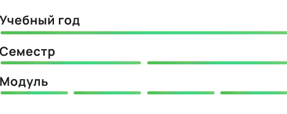
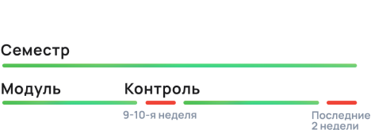

Семестры
Учебный процесс в ТвГУ организован
по семестрам. В
течение
семестра студенты
осваивают несколько дисциплин*,
затем переходят к
следующему этапу.
В учебном году два семестра,
в каждом семестре — два модуля.
Между
семестрами — каникулы.
Каждый семестр заканчивается сессией*.

*Академическая дисциплина — это отрасль знаний, которая преподается или исследуется в
высших
учебных заведениях. Проще говоря, это как предмет в школе, только в университете.
*Сессия — период сдачи зачётов и экзаменов.
Модули
Каждая учебная дисциплина разбивается на модули*.
Каждый модуль заканчивается рейтинговым контролем — на 9–10-й
и последней неделях семестра.
Семестр заканчивается промежуточной аттестацией (сессией)— сдачей зачётов и экзаменов*.

*Зачёты и экзамены — это формы контроля успеваемости
студентов в период сессии,
результаты
которого проставляются в зачётную книжку.
*«Модуль» — это период обучения в 8 недель.